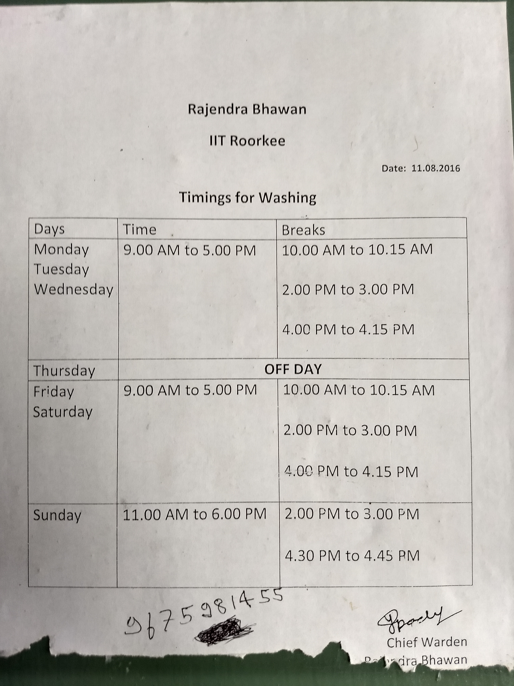
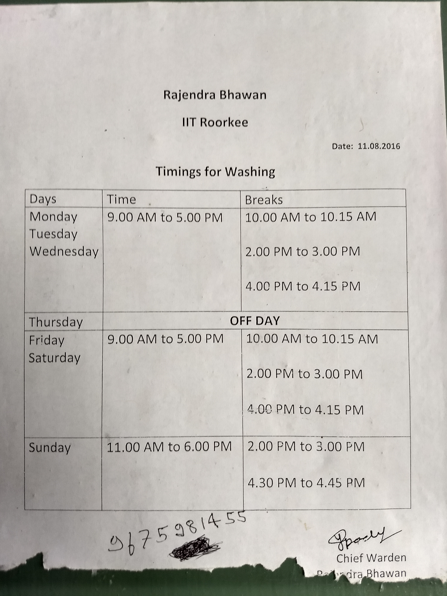

Life at IITR
The Pre-IITR Experience (1/4)
Okay, so you are reading my blog? WELCOME!!!
First things first – whatever I write in these series of blogs about “Life at IITR”,
will be from my (a Fachha-Fresher Bachha’s) perspective, that is, how I feel about things here. Your perspective of looking at things
may be very different from mine and that is totally fine. I’ll try my best to give you a general view of every situation that I write about
and then explain separately, how I feel about it.
Enough of “DISCLAMAIRS”!! Let’s Begin!
In this blog, I would like to focus more on the pre-IITR experience, i.e., the counselling, the admission procedure, and the orientation (I know pre-IITR is not my topic but still I would like to share my experience about it. If you want to directly skip to the main part, read my next blog where I discuss about the campus life). But why pre-IITR? Because of two reasons. First, there is no good source of information about these experiences on the internet and second, how you feel at IIT in your initial months after admission is somewhat going to be shaped by your pre-IIT experience (at least up to some extent).
The first thing after cracking JEE exam that brings you one step closer to the IIT system is the counseling. As I am from Delhi, naturally I went to IITD for my counseling. Everything was very well organized, i.e., there was no chaos (unlike counseling at some other engineering colleges) and officials were ready to help you. The IITD campus seemed good (at least where I visited) and overall counseling (for me) went very smoothly. (There was some problem as the counseling was stopped for few days due to the orders of supreme court but you don’t need to worry about it as this won’t happen again).
Now, as the counseling procedure is over and your IIT has been finalized, it is time to pack your bags and leave for a place which is
going to be your home for the next 4-5 years. But when should you arrive at the campus? What all documents do you need for admission?
These might seem like very silly questions and an obvious answer is to go check the website for important information. But what if the
information given is itself confusing? That’s what exactly was the case (At least I found it confusing and so did many others as I got
to know later). I called up at IITR to clarify about the documents required and when to reach the campus for the allotment of our hostel
rooms but no clear response was given. It seemed as if the people who answered the calls themselves weren’t aware of all the details.
All this confusion resulted in me reaching the campus one day before the admission day and I saw many others like me wandering around
to get their hostel rooms. In short, it wasn’t a smooth experience. Here's a map of IIT Roorkee to hep you navigate if you can't find it anywhere else ‐
.jpg "map")
On the next day, first I went to the Bhawan (that’s what they call hostels here at IITR) to put all the luggage in my room (rooms were
allotted purely based on our JEE ranks) and then to the Convocation Hall for the document verification and the issuance of i-card.
Convocation Hall was a total mess that day. Although the hall is very huge (seating capacity of over 2000 people), it was overloaded
and a huge crowd was gathered around the stage. There was a lack of organization (as compared to counseling in IITD) and the officials
were also not very helpful (again compared to IITD). After spending 4-5 hours in that fish market (The hall) full of people and completing
all the formalities, I had my I-card in my hand and could finally breathe after getting out of the hall. We were also given a very confusing
time table sheet for our classes ‐

I must pause here for a second to comment that IITD seems to be more efficient than IITR in managing admission related events (based on my experience with both these institutes). So, this is an area where IITR needs to improve.
After admission was over it was time for the Orientation Programme, which was somehow stretched to six very long days and was as boring as watching paint dry. The best part of it was when it ended (literally), i.e., the performances given by the cultural section of IITR during the closing ceremony of the programme. Here is the link to the video (if you want to have a feel of it).
During the first few months, various restrictions were placed on our movement in the campus & we were constantly flooded with notices on a physical notice board. Here are a few of those ‐
 


With this, I would like to end my first blog. I hope you enjoyed reading it and got to know a little more about the pre-IIT world through my
personal experiences. In the next blog, I will be focusing on the campus life and then on the quality of lectures here at IITR.
Have more questions? Feel free to comment below.
P.S. Any fellow IITRoorkian reading this blog, feel free to share your thoughts and experiences with me so that I can improve the quality of my upcoming blogs and perhaps reach a larger audience.